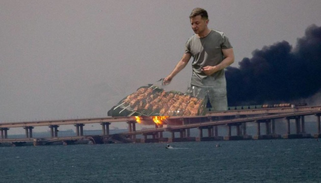
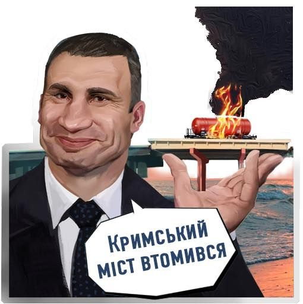
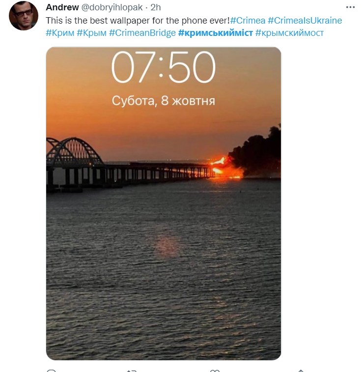
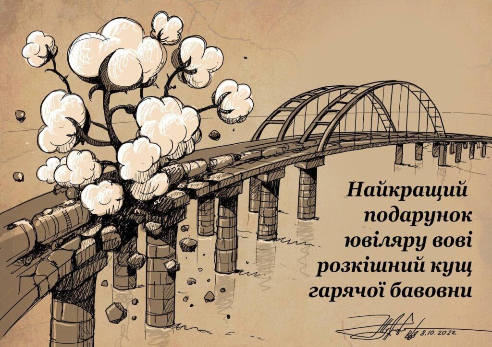

МЕНІ ПОДОБАЄТЬСЯ, ЯК ВОНО
ГОРИТЬ, ПАЛАЄ
Міст через Керченську протоку (також Кримський міст, Керченський міст)
Увечері 18 серпня 2022 року біля Керченського мосту пролунали вибухи, окупаційна «влада» Криму заявила, що «загрози для мосту немає». А тим часом, прокремлівські ЗМІ зазначили, що нібито в районі Кримського мосту було збито «український безпілотник», проте у самій Керчі оголошувалася повітряна тривога
ОДРАЗУ СТАВ ВСЕУКРАЇНСЬКИМ МЕМОМ

Звісно ж його почали об'єднувати зі всім підряд.

Це дійшло і до інших країн. Іностранці також форсять свої версії цього мему у соц-мережах.

А найважливіше, що це сталося на 70 російського президента путіна. Це фактично стало другим мемов, відкритки з бавовною.